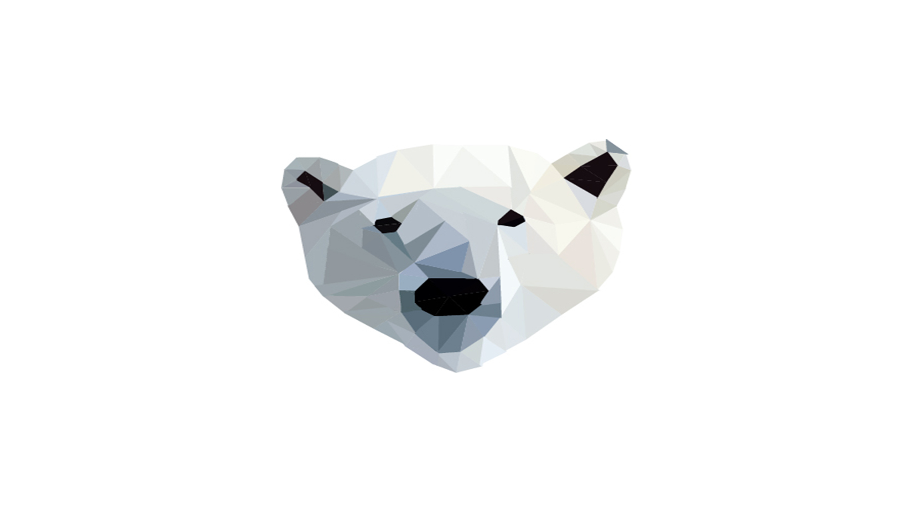
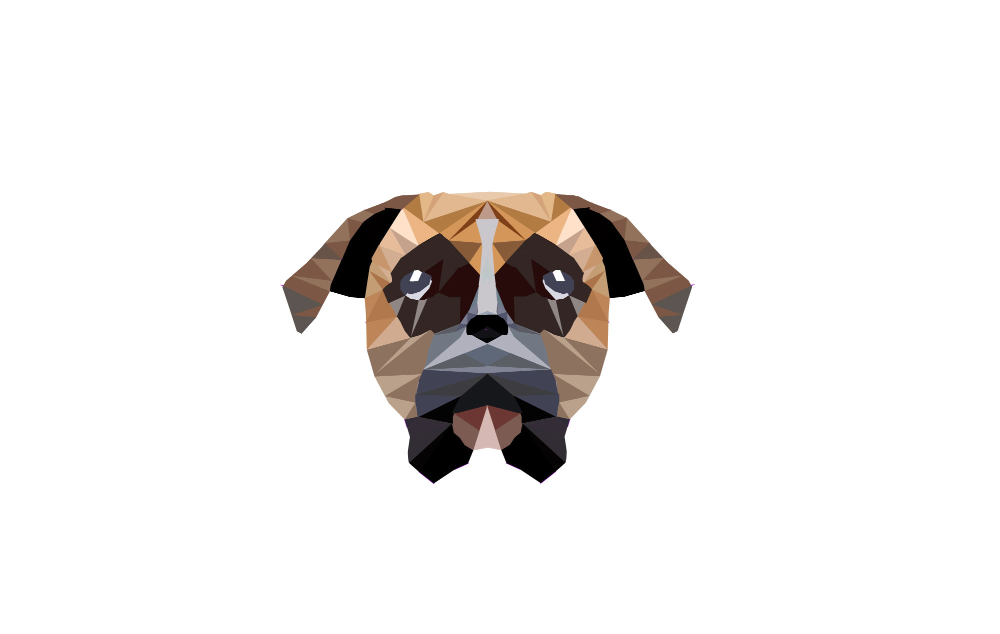

- 
- 
-

Til venstre for har jeg nogen Low-Poly billeder, som jeg har lavet i min fritid. Disse Low-poly billeder er lavet i Adobe Illustrator CC 2017. Billederne er lavet ved, at jeg har benyttet mig af orginale billeder, hvorefter jeg har brugt værktøjets pennen til at lave polygon over billedet. Dernæst har jeg farvelagt polygonerne med værktøjet "Pipette".
TIL FORSIDEN SE ALLE PROJEKTER